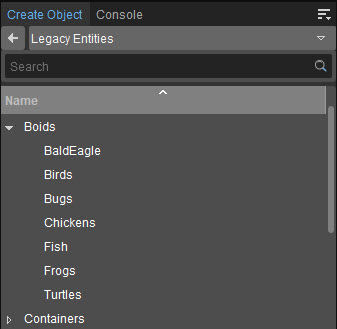

Overview
Boids exist only as an atmospheric entity, to add life and ambiance to the level. Boid entities simulate living animal objects that have simulated group behavior and obstacle avoidance.
Their complex behavior arises from the interaction of an individual agent (Boid) with other agents and the environment that they are moving in.
For information on setting up Boids from an Asset Creation perspective, see Boids (animated).
Placing Boids as an Entity
Alternatively, you can place the Boid as an Entity from the Entity tab. Within the Create Object → Legacy Entities, open the folder that contains the animal you want and drag it to the scene.
If the animal isn't displayed immediately, move the camera a good distance away from the Archetype Entity and then zoom back in. If this also fails to display the animal, save and reload the level.
Ambient animals cannot be directly controlled, but the player can interact with them. They come complete with sound effects and a simple flocking behavior.

Boid Entity Properties
It is important to note that when referencing the available parameters below, that not all of them are available for all boid classes.
For example, Behavior classes are only needed for the Bugs boid class and don't appear in other Boid properties.
Boid
Property | Description |
|---|---|
Animation | Deprecated |
Behavior | This sets the movement behavior for the boid entity.
|
Count | The Count number specifies how many individual objects will be spawned. |
gravity_at_death | Gravity acceleration that affects the body of the killed boid. |
Invulnerable | Specifies whether the boid can be killed or not. |
Mass | Mass of each individual boid. |
Model | Geometry for the boid, can be a character (.CHR) or static geometry (.CGF). |
Model1-5 | Additional geometry for the boid can be a character (.CHR) or static geometry (.CGF). If you specify more than one option the geometry will be selected at random. |
Flocking
Property | Description |
|---|---|
AttractDistMax | Maximum distance at which one boid can see another boid. Boids that are too far away will not be interacted with. |
AttractDistMin | Minimal distance that boids are comfortable with to stay close to each other before the separation force starts to affect them. |
EnableFlocking | When enabled, the rules of the emergent flocking behavior will be calculated on the whole flock of boids. |
FactorAlign | Steer towards the average heading of local flock-mates. |
FactorCohesion | Steer to move toward the average position of local flock-mates. |
FactorSeperation | Steer to avoid crowding local flock-mates, only when closer then AttractDistMin. |
FieldOfViewAngle | Field of vision of the boid to consider other boids as flock-mates. |
Ground
Note that these properties only apply when boids are walking on the ground. Boids will only be able to land in game mode and not while editing.
Property | Description |
|---|---|
FactorAlign | The alignment calculation tries to ensure that all boids move in roughly the same direction. |
FactorCohesion | The cohesion calculation tries to ensure that boids group together. |
FactorOrigin | This origin factor controls how much boids are attracted to their point of origin. |
FactorSeparation | The separation calculation tries to ensure that boids avoid one another. |
HeightOffset | Vertical offset of boids from the ground. |
OnGroundIdleDurationMax | Maximum time boids will spend in idle state. |
OnGroundIdleDurationMin | Minimum time boids will spend in idle state. |
OnGroundWalkDurationMax | Maximum time boids will spend in walk state. |
OnGroundWalkDurationMin | Minimum time boids will spend in walk state. |
WalkSpeed | Walk speed when boids land. |
WalkToIdleDuration | Time it takes for boids to transition from walking to idle state. |
Movement
Property | Description |
|---|---|
FactorAvoidLand | Force coefficient to divert boid from the land or water. |
FactorHeight | Controls the force that is applied to keep boids at the original height for the flock. |
FactorOrigin | Controls the force that attract boids to the origin point of the flock. |
FactorTakeOff | Vertical movement speed scale during take-off. |
FlightTime | Approximate flight time before attempting to land. |
HeightMax | Maximum height boids can fly to (Height above land). |
HeightMin | Minimal height boid can fly at (Height above land). |
LandDecelerationHeight | Height at which boids will start to decelerate when landing. |
MaxAnimSpeed | If the boid had animations, then you can use this variable to control the speed of the animation |
SpeedMax | Maximum speed that the boid can move with. |
SpeedMin | Minimal speed that the boid can move with. |
Options
Property | Description |
|---|---|
Activate | When checked, active boids are visible and move from the start of the level. Alternatively, boids can be activated at a later stage with the activate event. |
AnimationDist | Maximum distance from camera at which animations will update. |
FollowPlayer | When checked, boids will only wrap around the current player position, flock origin point becomes the player position. |
NoLanding | Turns landing for bird flocks on/off. |
ObstacleAvoidance | Boids will sense the physical environment and be diverted from the physical obstacles. |
Radius | Maximum radius the boid can move from the flock origin point. |
SpawnFromPoint | If set to true, all the boids will spawn at the boid entity position. |
StartOnGround | If true, boids will spawn on the ground, otherwise they will spawn in the air. |
VisibilityDist | Maximum distance from which the whole flock can be visible. |
Particle Effects
Property | Description |
|---|---|
EffectScale | Scale of the particle effect to be played. |
waterJumpSplash | Particle effect to be played when the boid splashes into the water. |